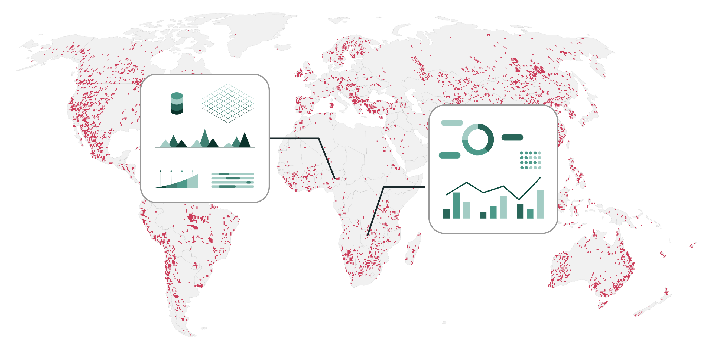

MINE-THE-GAP
Where, when, what, and how much is mined globally
ERC Consolidator Grant project
Global energy transition and digitalization are increasing demand for minerals. MINE-THE-GAP addresses the urgent need for spatial information to understand these impacts.


MINE-THE-GAP will develop scalable models to map key sets of mine-level indicators using artificial intelligence and satellite earth observation.
Global mine-level indicators
The project will advance research on spatial data science and sustainability and enable understanding spatiotemporal socio-ecological dynamics of mineral extraction globally.
Open jobs!